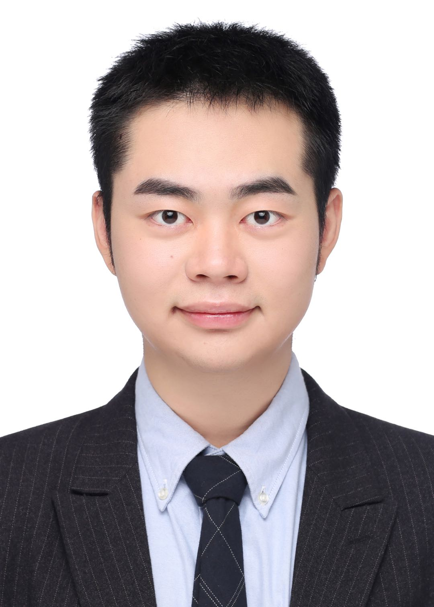

|
Yizhou Li
Ph.D. Candidate
System and Control Engineering Department
Tokyo Institute of Technology
Email: yli [at] ok.sc.e.titech.ac.jp
[Google Scholar] |
[Lab]
|

|
Biography
I started my Ph.D. life in the SCE Department of Tokyo Tech in 2021 Fall.
My supervisor is Prof. Masatoshi Okutomi, and I also work with Prof. Yusuke Monno.
Prior to that, I received M.E. degree in the same department of Tokyo Tech in 2021 Fall (GPA 3.50/4), and B.E. degree in CS Department from SCU in 2019 Fall (GPA 3.57/4).
My research is in computer vision and image processing. I am particularly interested in low-level vision and 3D reconstruction.
Publications
-
TDM: Temporally-Consistent Diffusion Model for All-in-One Real-World Video Restoration
Yizhou Li, Zihua Liu, Yusuke Monno, Masatoshi Okutomi
International Conference on Multimedia Modeling (MMM), 2025
Best Paper Candidates.
-
Dual-Pixel Raindrop Removal
Yizhou Li, Yusuke Monno, Masatoshi Okutomi
IEEE Transactions on Pattern Analysis and Machine Intelligence (TPAMI),
2024
-
Instance-Wise MRI Reconstruction Based on Self-Supervised Implicit Neural Representation
Songxiao Yang, Yizhou Li, Masatoshi Okutomi
The Annual International Conference of the IEEE Engineering in Medicine and Biology Society (EMBC), 2024
-
A Light-weight Universal Medical Segmentation Network for Laptops Based on Knowledge Distillation
Songxiao Yang, Yizhou Li, Ye Chen, Zhuofeng Wu, Masatoshi Okutomi
Foundation Models for Medical Vision (CVPR Workshop), 2024
Meritorious Winner Award (Top 5).
-
CFDNet: A Generalizable Foggy Stereo Matching Network with Contrastive Feature Distillation
Zihua Liu, Yizhou Li, Masatoshi Okutomi
IEEE International Conference on Robotics and Automation (ICRA), 2024
-
Global Occlusion-Aware Transformer for Robust Stereo Matching
Zihua Liu, Yizhou Li, Masatoshi Okutomi
Proceedings of the IEEE/CVF Winter Conference on Applications of Computer Vision (WACV), 2024
-
Dual-Pixel Raindrop Removal
Yizhou Li, Yusuke Monno, Masatoshi Okutomi
British Machine Vision Conference (BMVC),
2022
Oral Presentation, rate: 3.1% in all submissions.
-
Single Image Deraining Network with Rain Embedding Consistency and Layered LSTM
Yizhou Li, Yusuke Monno, Masatoshi Okutomi
Proceedings of the IEEE/CVF Winter Conference on Applications of Computer Vision (WACV), 2022
-
Recurrent RLCN-Guided Attention Network for Single Image Deraining
Yizhou Li, Yusuke Monno, Masatoshi Okutomi
The 17th International Conference on Machine Vision and Applications (MVA), 2021
-
Advances in the Application of Machine Learning in Maxillofacial Cysts and Tumors
Hongxiang Mei, Junhao Cheng, Yizhou Li, Huangshui Ma, Kaiwen Zhang, Yuke Shou, Yang Li
West China Journal of Stomatology, 2020
-
Deep Density-aware Count Regressor
Zhuojun Chen, Junhao Cheng, Yuchen Yuan, Dongping Liao, Yizhou Li, Jiancheng Lv
The 24th European Conference on Artificial Intelligence (ECAI), 2020
-
CLPnet: Cleft Lip and Palate Surgery Support with Deep Learning
Yizhou Li, Junhao Cheng, Hongxiang Mei, Huangshui Ma, Zhuojun Chen, Yang Li
The 41st Annual International Conference of the IEEE Engineering in Medicine and Biology Society (EMBC), 2019
Awards
| Meritorious Winner Award, CVPR 2024: Segment Anything In Medical Images On Laptop | 2024 |
| Miura Award, The Japan Society of Mechanical Engineers | 2022 |
| Outstanding Graguates, SCU | 2019 |
| Microsoft Imagine Cup: National 2nd Prize | 2018 |
| Undergratuate Training Program for Innovation and Entrepreneurship: National Project | 2018 |
| Blue Bridge Cup Software Development Competition: National 3rd Prize | 2017 |
Scholarships
| JST Support for Pioneering Research Initialized by the Next Generation | Sep 2021 - Sep 2024 |
| Moritani Scholarship Foundation Scholarship | April 2021- Sep 2021 |
Experiences
Academic Service
| Reviewer for the IEEE Transactions on Pattern Analysis and Machine Intelligence |
2023 |
| Reviewer for the Pattern Recognition |
2023 |
| Reviewer for the IEEE Transactions on Neural Networks and Learning Systems |
2022 |
| Reviewer for the IEEE Transactions on Pattern Analysis and Machine Intelligence |
2022 |